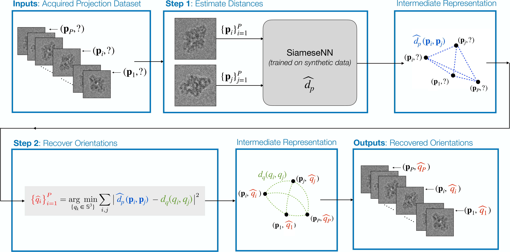

Learning to Recover Orientations from Projections in Single-Particle Cryo-EM¶
Jelena Banjac, jelena.banjac@epfl.ch, Data Science Master Student
Laurène Donati, laurene.donati@epfl.ch, BIG, EPFL
Michaël Defferrard, michael.defferrard@epfl.ch, LTS2, EPFL
Summary¶
A major challenge in single-particle cryo-electron microscopy (cryo-EM) is that the orientationsadopted by the 3D particles prior to imaging are unknown; yet, this knowledge is essential forhigh-resolution reconstruction. We present a method to recover these orientations directly from theacquired set of 2D projections. Our approach consists of two steps: (i) the estimation of distancesbetween pairs of projections, and (ii) the recovery of the orientation of each projection from thesedistances. In step (i), pairwise distances are estimated by a Siamese neural network trained onsynthetic cryo-EM projections from resolved bio-structures. In step (ii), orientations are recovered byminimizing the difference between the distances estimated from the projections and the distancesinduced by the recovered orientations. We evaluated the method on synthetic cryo-EM datasets.Current results demonstrate that orientations can be accurately recovered from projections that areshifted and corrupted with a high level of noise. The accuracy of the recovery depends on theaccuracy of the distance estimator. While not yet deployed in a real experimental setup, the proposedmethod offers a novel learning-based take on orientation recovery in SPA and may bring interestingnew perspectives in the field. Our code is available at this url.
Two-Step Method¶
Our method consists of two steps. First, we estimate distances between pairs of projections. Second, werecover the orientation of each projection from these distances.

Repository¶
This repository contains a python package called cryoem that contains scripts to generate a huge amount of 2D projections with corresponding angles of 3D volumes. perform distance estimation and orientation recovery, and reconstruct the 3D protein using estimated orientations.
It also contains the notebooks with different combinations of project approaches.
Notebooks¶
Notebooks are divided in several phases of development:
Phase 0: prepare simulated data, generate 3D protein’s set of 2D projection images and their corresponding angles,
Phase 1: angle recovery using the perfect distances,
Phase 2: distance estimation and angle recovery,
Phase 3: reconstruction of 3D protein structure from 2D projection images and estimated angles (from Phase 1 or Phase 2).
Installation¶
First, download and install Anaconda or Miniconda on your machine, link here. Note: the project was developed with Python 3.6+.
Then open the terminal and type following:
# clone the repo
git clone https://github.com/JelenaBanjac/protein-reconstruction.git
# position yourself inside the project
cd protein-reconstruction
# create environment
conda env create -f environment.yml
# activate environment
conda activate protein_reconstruction
Now you are able to use the code and run the notebooks you wish!
[Optional] Test if some dependencies are installed:
# tensorflow check
python3 -c "import tensorflow as tf; print(tf.reduce_sum(tf.random.normal([1000, 1000])))"
# o/w install with:
pip3 install tensorflow-gpu
pip3 install tensorflow-graphics
# astra toolbox check
python3 -c "import astra;astra.test_CUDA()"
To run the jupyter notebooks ($1 is GPU id, $2 is port for jupyter notebook if ran externally):
cd $HOME/protein-reconstruction/notebooks
source activate protein_reconstruction
export CUDA_VISIBLE_DEVICES=$1
nohup $HOME/miniconda/envs/protein_reconstruction/bin/jupyter notebook --ip=0.0.0.0 --port=$2 &
For more information how to do use the pachage methods, checkout the website with the example.
Package versions¶
The following versions of the packages are used in the project.
python-3.6.8
cudnn-7.1.3
cudatoolkit-8.0
cuda 10
cuDNN 7
nvidia driver 415
$ nvcc --version
$ cat /usr/local/cuda/include/cudnn.h | grep CUDNN_MAJOR -A 2
Licence & Publication¶
The code in this repository is released under the terms of the MIT license. Please cite our paper if you use it.
@inproceedings{orientation_recovery_cryoem,
title = {Learning to recover orientations from projections in single-particle cryo-EM},
author = {Banjac, Jelena, Donati, Laur\`ene, and Defferrard, Micha\"el},
year = {2021},
url = {https://arxiv.org/abs/1606.09375},
}